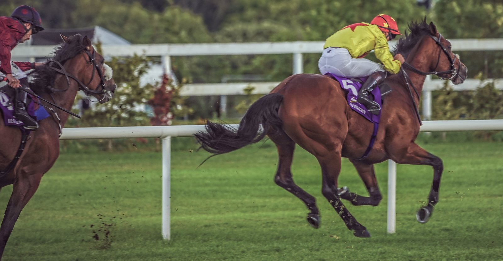

Irlanda sube un 3 % el dinero público para el turf y mantiene el impuesto de apuestas en el 2 %
Los presupuestos irlandeses de 2027, presentados el martes, elevan a 102 millones de euros el fondo público para las carreras de caballos y de galgos y dejan intacto el impuesto sobre las apuestas.

Del total, 81,6 millones irán a Horse Racing Ireland (HRI), el organismo que gobierna el turf en el país, frente a los 79,3 millones de este año: una subida del 3 %. Los galgos reciben 20,4 millones. El conjunto del fondo pasa de 99,1 a 102 millones.
La cifra se queda corta respecto a lo que HRI había planeado. Su plan estratégico contaba con 88 millones para 2027, así que la asignación real deja un hueco de 6,4 millones. El organismo ya ha anunciado para el año próximo un calendario récord de 396 jornadas.
El ministro de Agricultura, Martin Heydon, vinculó el aumento a la aplicación de las recomendaciones de la revisión Indecon sobre bienestar e integridad en el sector equino y en el de los galgos.
El impuesto sobre las apuestas seguirá en el 2 %, el tipo que rige desde que se duplicó en 2019. La patronal de casas de apuestas lo recibió con alivio. «Es muy importante que no se haya subido, porque no sabemos a qué nivel llegará la nueva tasa», dijo Sharon Byrne, presidenta de la Irish Bookmakers Association. Se refería a la contribución a un fondo de impacto social que prepara la Gambling Regulatory Authority of Ireland, el nuevo regulador del juego.
Byrne recordó que en Irlanda quedan 643 locales de apuestas, frente a los 1.385 de 2008. Según su asociación, desde la subida de 2019 han cerrado 222 y se han perdido unos 1.000 empleos en el comercio minorista.
— Redacción de Galope al Día